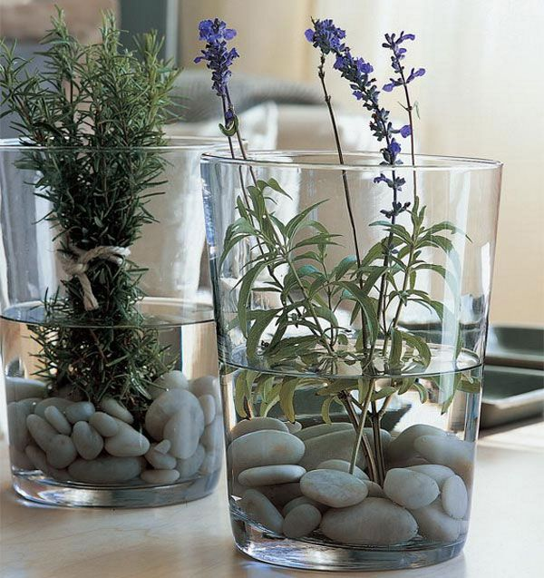
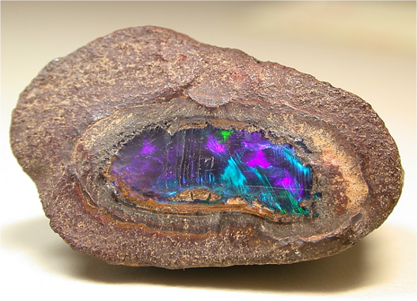

Grades and Shades of Inclusiveness
Grades and Shades of Inclusiveness
INTRODUCTION
Inclusiveness is like a precious stone. When someone comes across a precious stone, there are a number of different reactions they may have.
This story will present some of those reactions as scenarios, and describe how it relates to accessibility and inclusiveness.
SCENARIO #1: NEGLECTING TO BE INCLUSIVE
One way of reacting to the precious stone is outright dismissing it.
The Story: In this scenario, the stone is completely ignored. Even though it has a shine, its own appeal, and characteristics, none of those are taken into account. The stone receives no attention and no value.
Impact on Accessibility: There are two different degrees of impact on accessibility: partial and total.
Total neglect involves no action towards accessibility. This creates stigma and discrimination towards accessibility. It also reinforces the blind spots that society may have about accessibility, making the issue even more challenging to resolve.
Partial neglect occurs when you take some steps towards accessibility, but neglecting parts of it for different reasons. For example, a lack of funding or knowledge leads to partial neglect. Additionally, ignoring feedback on the existing solutions for accessibility also contribute to neglect.
Examples:
-
A landlord that is solely interested in maximizing profit at the expense of the tenants. Despite being presented with the case for accessibility, the landlord outright dismisses these needs. Worse even, they use accessibility demands as a reason to divide tenants and make it difficult to find a solution for all.
-
Using payment terminals that don’t enable a ”tap” functionality leads to privacy issues. Without a tap, a user has to share their pin with a third party (i.e. cashier) which puts their identity and security at risk.
-
Banks offer the service of a safety box, which are not designed to be accessible. Both the actual design of the infrastructure and the service itself are limiting and do not work for everyone
SCENARIO #2: INCLUSIVENESS AS A PROP
Another reaction to seeing a stone is to think about it as a prop or decoration.
The Story: In this scenario, the stone is taken from its environment and used as a display piece. For example, this may add a certain aesthetic to someone’s home or serve as a decoration for his or her living space. In this scenario, the stone becomes part of the background; it’s not a focal point. It’s only brought up when it needs to be presented, but otherwise it’s sidelined as an object for display.
Impact on Accessibility: Here, we see accessibility as a trend. It’s used as a real-world display piece to demonstrate compliance with legal requirements. This treatment puts more importance on the presentation of meeting accessibility (the superficial), not actually serving the core needs of accessibility (the meaningful).
Example(s):
-
Elevators that are designed to be accessible, but in fact do not meet the diverse needs of the users its intended to serve. The placement of the control panel is placed out of the hand range, the design of the buttons are limiting, a lack of voice-activated controls, etc.
-
Washrooms are not equipped with transferring devices for those in need. There is a range of unique, and private, needs that are unmet in washroom designs that don’t respect or dignify the users.
SCENARIO #3: INCLUSIVENESS AS A COMMODITY
Another reaction to seeing a precious stone, is to look at how you can use it to your own benefit. Essentially, the stone becomes an object of consumption.
The Story: For example, the stone can be marketed, promoted, and sold. Driven by these motives, the stone is only valuable by serving the "business", not in its own right. The stone is just like any other stone, extracted from its environment and sold for its material benefit.
Impact on Accessibility: This relates to accessibility, because it's often valued from a commercialized or business perspective. This puts accessibility as risk of becoming commoditized. It downgrades the value of those with accessibility needs by dehumanizing the person. Both, the uniqueness and diversity found in inclusivity are removed in favour of efficiency and scale.
Example: The pricing and business model for a variety of accessible products and services demonstrate the commercialization of accessibility:
- Power chairs that come at a price tag that is unreasonable for any individual to purchase, causing them to rely on funding or other means
- Accessible tech and devices that are provided and serviced by organizations and
- The extremely high price point for accessible vans, and its maintenance at a specialized shops
SCENARIO #4: CORE VALUE OF INCLUSIVENESS
Another reaction to coming across the stone is to see, understand, and respect the stone for its own value.
The Story: In this scenario, the stone is appreciated for its inherent value -- to know it as it is, not as you project. This means understanding all aspects of the stone like its history, environment, variety of characteristics, power of action and its limitations, etc.
Impact on Accessibility: When it comes to accessibility, this reaction respects, dignifies, and empowers those served by inclusiveness. This involves seeking to understand the needs and challenges from the perspective of those who need it. Ultimately, this puts the focus on the real-life impact of accessibility and creates a habit of ongoing improvement.
Example:
- The use of ramps in public spaces are an example of taking care of people’s needs
- Closed Caption is a broad, mass, example of assisting those with hearing challenges